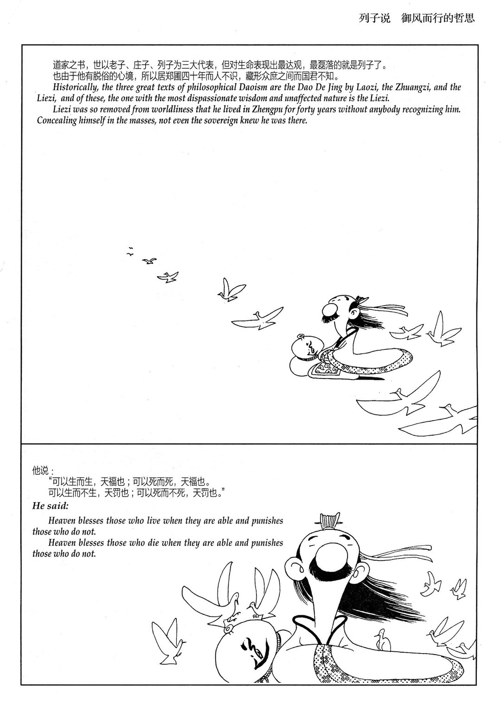
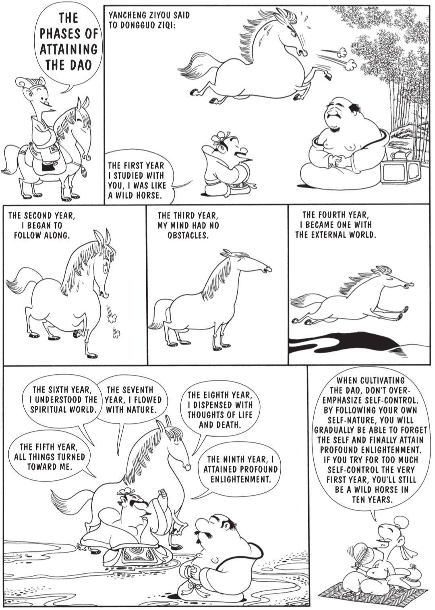

在野 zài yě · In the Wild
在野 · นอกตำรา
在野 · 活的道教现场
Eight things real Daoists argue about that the bookshop translation never mentions.
แปดเรื่องที่ชาวเต๋าจริง ๆ ถกเถียงกัน แต่ฉบับแปลตามร้านหนังสือแทบไม่พูดถึง
真实道教徒会争论的八件事，书店译本通常不会告诉你。
Once you know the book, you start meeting people who also know it. Some are practicing monks. Some are sinologists. Some are old aunties at the village temple. They argue. The arguments are interesting. Below are eight that have stayed with the author. He is one Thai-Chinese reader inside the conversation, not its referee.
เมื่อคุณรู้จักหนังสือเล่มนี้ คุณจะเริ่มพบคนที่รู้จักมันเช่นกัน บางคนเป็นนักบวช บางคนเป็นนักจีนศึกษา บางคนเป็นอาม่าที่วัดหมู่บ้าน พวกเขาเถียงกัน และการเถียงนั้นน่าสนใจ ต่อไปนี้คือแปดเรื่องที่ติดอยู่กับผู้เขียน เขาเป็นผู้อ่านไทย-จีนคนหนึ่งในวงสนทนา ไม่ใช่กรรมการตัดสิน
当你真正认识这本书以后，你会开始遇见其他也认识它的人。有些是修行的道士，有些是汉学家，有些是村庙里的老阿姨。他们会争论，而且这些争论很有意思。下面八件事，是作者一直记得的争论。他只是这个对话中的一位泰华读者，不是裁判。
壹
Daoists were the original hippies.
ชาวเต๋าอาจเป็นฮิปปี้รุ่นแรก
道家也许是最早的嬉皮士。
After Edward Slingerland · Trying Not to Try , ch. 4
ตาม Edward Slingerland · Trying Not to Try บทที่ 4
参照 Edward Slingerland《Trying Not to Try》第四章
In the late strata of the Analects , Confucius keeps running into people who refuse to play. Two strange men yoked to a plough, calling themselves Standing Tall in the Marsh and Prominent in the Mud. A man with a wicker basket on his back who hears Confucius playing the stone chimes and walks past, muttering "If no one understands you, just tend to yourself. " These are not peasants. They are classically trained scholars who have fled the age — rejected their given names, rejected office, rejected rite. The Confucians get the last word inside the Analects . But the hippies eventually got their own book.
ในชั้นหลังของ หลุนอวี่ ขงจื๊อมักพบคนที่ปฏิเสธจะเล่นตามกติกา ชายประหลาดสองคนเทียมคันไถ ตั้งชื่อตนเองเหมือนคนยืนสูงในหนองและคนเด่นในโคลน อีกคนแบกตะกร้าหวาย ได้ยินขงจื๊อตีระฆังหินแล้วเดินผ่าน พลางพึมพำว่า ถ้าไม่มีใครเข้าใจท่าน ก็ดูแลตนเองเถิด คนเหล่านี้ไม่ใช่ชาวนา แต่เป็นบัณฑิตที่ได้รับการศึกษาคลาสสิกและ หนีออกจากยุคสมัย ปฏิเสธชื่อ ตำแหน่ง และพิธี ขงจื๊อได้คำสุดท้ายใน หลุนอวี่ แต่ในที่สุดฮิปปี้เหล่านี้ก็มีหนังสือของตนเอง
在《论语》的较晚层次里，孔子不断遇到拒绝入局的人。两个怪人拉着犁，自称长沮、桀溺。还有一个背着草筐的人，听见孔子击磬后走过，说：“莫己知也，斯己而已矣。” 这些人不是农民，而是受过经典教育、却逃离时代 的士人：拒绝姓名，拒绝仕途，拒绝礼。儒家在《论语》里得到最后一句话。但这些“嬉皮士”后来也有了自己的书。
That book is the one you are now reading. The Daodejing is, in Slingerland's reading, the manifesto of the 4th-century BCE counterculture. Its voice — cut off learning, no worries ; the five colors blind the eye ; fancy clothes and sharp swords are robbery made proud — belongs to someone who thinks the cure is worse than the disease.
หนังสือเล่มนั้นคือเล่มที่คุณกำลังอ่านอยู่ ในการอ่านของ Slingerland เต้าเต๋อจิง คือแถลงการณ์ของวัฒนธรรมต่อต้านในศตวรรษที่ 4 ก่อนคริสต์ศักราช น้ำเสียงของมัน — ตัดการเรียนรู้เสีย ก็หมดกังวล ; สีทั้งห้าทำให้ตาบอด ; เสื้อผ้าหรูและดาบคมคือการปล้นที่ภูมิใจในตัวเอง — เป็นเสียงของคนที่คิดว่ายารักษาเลวร้ายกว่าโรค
那本书，就是你现在读的这本。《道德经》在 Slingerland 的读法中，是公元前四世纪反文化运动的宣言。它的声音——绝学无忧 、五色令人目盲 、穿锦衣、佩利剑，是盗夸 ——属于一个认为“药比病更糟”的人。
This matters because most English translations smooth out the anger. They make Lao Tzu sound like a calm Zen master. He is closer to Thoreau at Walden: principled, chronic, slightly sarcastic disagreement with the city.
เรื่องนี้สำคัญ เพราะฉบับอังกฤษจำนวนมากทำให้ความโกรธเรียบเกินไป ทำให้เหล่าจื๊อดูเหมือนครูเซนสงบ ๆ บนภูเขาหมอก แต่เขาใกล้ธอโรที่วอลเดนมากกว่า: ไม่เห็นด้วยกับเมืองอย่างมีหลักการ เรื้อรัง และเหน็บนิด ๆ
这很重要，因为许多英文译本把这种愤怒磨平了，让老子听起来像雾山上的安静禅师。其实他更接近瓦尔登湖边的梭罗：有原则、长期地、略带讽刺地不同意他眼前的城市。
貳
"Drunk on Heaven" — wu-wei is religious before it is psychological.
“เมาด้วยฟ้า” — อู๋เว่ยเป็นเรื่องศาสนาก่อนเป็นเรื่องจิตวิทยา
“醉于天”——无为先是宗教性的，才是心理学的。
After Slingerland · Trying Not to Try , ch. 2
ตาม Slingerland · Trying Not to Try บทที่ 2
参照 Slingerland《Trying Not to Try》第二章
The Zhuangzi tells of a drunk man who falls from a fast cart and is unhurt because his fear is gone: his spirit is intact . Slingerland's point is that drunkenness is a crude analogy. What Zhuangzi really wants you drunk on is Heaven — tian 天. Wu-wei works because the practitioner trusts a cosmic order enough to fall into it.
จวงจื่อ เล่าเรื่องคนเมาตกจากรถที่วิ่งเร็วแต่ไม่บาดเจ็บ เพราะความกลัวหายไป: จิตวิญญาณของเขายังครบ ประเด็นของ Slingerland คือความเมาเป็นอุปมาแบบหยาบ สิ่งที่จวงจื่อต้องการให้คุณเมาจริง ๆ คือ ฟ้า — 天 การอู๋เว่ยทำงานได้เพราะผู้ปฏิบัติไว้ใจระเบียบจักรวาลพอที่จะปล่อยตัวลงไปในนั้น
《庄子》讲过一个故事：醉汉从疾驰的车上摔下来，却没有受伤，因为他的恐惧消失了，“神全” 。Slingerland 的意思是，醉只是一个粗糙的比喻。庄子真正想让你醉于其中的，是天 。无为之所以可能，是因为修行者信任一种宇宙秩序，愿意让自己落入其中。
Modern Western readings often remove Heaven. Wu-wei becomes a productivity trick: flow, mindfulness, intuition. That is Daoism translated for readers who no longer have a heaven to fall into.
การอ่านแบบตะวันตกสมัยใหม่มักตัด “ฟ้า” ออก อู๋เว่ยจึงกลายเป็นเคล็ดลับเพิ่มประสิทธิภาพ: flow, mindfulness, intuition นี่คือเต๋าที่แปลให้ผู้อ่านที่ไม่มีฟ้าให้ตกลงไปแล้ว
现代西方读法常把“天”拿掉。无为于是变成效率技巧：心流、正念、直觉。这是翻译给一个已经没有“天”可以坠入的读者群的道家。
The other half is de 德: the charisma that radiates from wu-wei. Confucian de is the Pole Star; Daoist de is valley gravity. Same force, opposite metaphor.
อีกครึ่งหนึ่งคือ เต๋อ 德: เสน่ห์อำนาจที่แผ่ออกจากอู๋เว่ย เต๋อ แบบขงจื๊อคือดาวเหนือ ส่วน เต๋อ แบบเต๋าคือแรงโน้มถ่วงของหุบเขา แรงเดียวกัน อุปมาตรงข้ามกัน
另一半是德：从无为之人身上散发出的感召力。儒家的德像北辰；道家的德像山谷的重力。同一种力量，相反的隐喻。
叁
Lao Tzu has neighbors: 莊子 Zhuangzi and 列子 Liezi.
เหล่าจื๊อมีเพื่อนบ้าน: จวงจื่อและเลี่ยจื่อ
老子不是独居的：旁边还有庄子和列子。
Three Daoist masters, one tradition
สามปราชญ์เต๋า หนึ่งสายธาร
三位道家大师，一个传统
Most English-language Daoism is "Lao Tzu only." This is a publishing accident. The classical Daoist canon has three voices: Daodejing , terse and political; Zhuangzi , full of stories and paradox; Liezi , playful and least famous. Lao Tzu argues; Zhuangzi laughs; Liezi rides the wind.
เต๋าภาษาอังกฤษจำนวนมากเป็นแบบ “เหล่าจื๊อเท่านั้น” นี่เป็นอุบัติเหตุทางการพิมพ์ ในคัมภีร์เต๋าคลาสสิกมีสามเสียง: เต้าเต๋อจิง สั้นและการเมือง; จวงจื่อ เต็มไปด้วยเรื่องเล่าและปฏิทรรศน์; เลี่ยจื่อ เล่นสนุกและไม่ดังที่สุด เหล่าจื๊อโต้แย้ง จวงจื่อหัวเราะ เลี่ยจื่อขี่ลม
英语世界的道家常常是“只有老子”。这是出版史的偶然。古典道家其实有三种声音：《道德经》简短而政治；《庄子》多故事与悖论；《列子》最 playful，也最不有名。老子辩，庄子笑，列子御风。
The Liezi imagines a man so quiet he lives forty years in a village without being recognized. If chapter 17 says the best leader is barely known, Liezi is what happens forty years later: the leader has stopped governing and the village still works.
เลี่ยจื่อ จินตนาการถึงคนที่เงียบจนอยู่ในหมู่บ้านสี่สิบปีโดยแทบไม่มีใครจำได้ ถ้าบทที่ 17 บอกว่าผู้นำที่ดีที่สุดแทบไม่มีใครรู้จัก เลี่ยจื่อ คือสิ่งที่เกิดขึ้นอีกสี่สิบปีต่อมา: ผู้นำหยุดปกครองแล้ว แต่หมู่บ้านยังดำเนินได้
《列子》想象一个安静到在郑圃住了四十年也无人识得的人。如果第十七章说“最好的领导者几乎没人知道”，《列子》就是四十年后的版本：领导者已经不再治理，而村子仍然运转。

蔡志忠 · 列子說 · Liezi rides the wind. The least famous of the three Daoist masters, and — by his own argument — the one who got the closest.
蔡志忠 · 列子說 · เลี่ยจื่อขี่ลม ดังน้อยที่สุดในสามปราชญ์เต๋า และตามเหตุผลของเขาเอง อาจเข้าใกล้ที่สุด
蔡志忠 · 《列子说》· 列子御风。三位道家大师中最不有名的一位；按他自己的说法，也许也是最接近道的一位。
肆
There are phases. The book does not tell you which one you are in.
การปฏิบัติมีระยะ แต่หนังสือไม่ได้บอกว่าคุณอยู่ระยะไหน
修道有阶段，但书不会告诉你正处在哪一段。
Yancheng Ziyou's nine-year arc · Zhuangzi 27
เส้นทางเก้าปีของเหยียนเฉิงจื่อโหยว · จวงจื่อ 27
颜成子游的九年过程 ·《庄子》第二十七
A Zhuangzi parable gives nine years of practice, one year per line: wild horse, following along, mind without obstacles, one with the world, all things turning toward me, knowing the spirit world, flowing with nature, forgetting life and death, profound enlightenment.
อุปมาใน จวงจื่อ ให้ภาพการฝึกเก้าปี ปีละหนึ่งบรรทัด: ม้าป่า, เริ่มคล้อยตาม, ใจไม่มีอุปสรรค, เป็นหนึ่งกับโลกภายนอก, สิ่งทั้งหลายหันมาหา, เข้าใจโลกวิญญาณ, ไหลไปกับธรรมชาติ, วางความคิดเรื่องเป็นตาย, บรรลุความสว่างลึก
《庄子》有一则寓言，把九年修行一年一句写出：像野马；开始随顺；心无障碍；与外物为一；万物向我；通于神明；顺于自然；忘生死；得大明。
The point is not heroic control. If you force self-control in year one, you may still be a wild horse in year ten. The Daoist first move is to let the horse drink .
ประเด็นไม่ใช่การควบคุมตนแบบวีรบุรุษ ถ้าปีแรกคุณฝืนควบคุมเกินไป ปีที่สิบก็อาจยังเป็นม้าป่า ข้อเสนอของเต๋าคือก้าวแรกให้ ปล่อยให้ม้าได้ดื่มน้ำ
重点不是英雄式自我控制。如果第一年就过度控制自己，十年后也可能仍是野马。道家的第一步，是先让马喝水 。

蔡志忠 · 莊子 · The phases of attaining the Dao, year by year. The horse is the same horse — the rider has stopped being startled by it.
蔡志忠 · 莊子 · ระยะของการเข้าถึงเต๋าปีต่อปี ม้ายังเป็นม้าตัวเดิม คนขี่เลิกตกใจมันแล้ว
蔡志忠 ·《庄子》· 得道的阶段，一年一年。马还是那匹马；骑者不再被它吓到。
伍
"He who speaks does not know" — and there is a study.
“คนที่พูดไม่รู้” — และมีงานวิจัยรองรับ
“知者不言”——而且真有研究。
Wilson & Schooler · the jam study (1991)
Wilson & Schooler · การศึกษาชิมแยม (1991)
Wilson 与 Schooler · 果酱实验（1991）
In a classic study, people tasted jams. One group simply rated them. Another group explained why before rating. The explainers drifted away from expert judgment. Their preferences became worse. The name is verbal overshadowing .
ในการศึกษาคลาสสิก ผู้เข้าร่วมชิมแยม กลุ่มหนึ่งให้คะแนนเฉย ๆ อีกกลุ่มต้องอธิบายว่า ทำไม ก่อนให้คะแนน กลุ่มที่อธิบายกลับห่างจากการตัดสินของผู้เชี่ยวชาญมากขึ้น ความชอบของพวกเขาแย่ลง ปรากฏการณ์นี้เรียกว่า verbal overshadowing
一项经典研究让受试者品尝果酱。一组只评分；另一组先说明自己为什么 喜欢或不喜欢，再评分。解释组的判断反而偏离专家评价，偏好变差。这个现象叫语言遮蔽 。
That is chapter 56 in laboratory clothing. Forced explanation can overwrite perception. "Those who know do not speak" is not anti-language; it is a warning not to let words replace tasting.
นี่คือบทที่ 56 ในเสื้อกาวน์ห้องแล็บ การถูกบังคับให้อธิบายอาจเขียนทับการรับรู้ “ผู้รู้ไม่พูด” ไม่ใช่การต่อต้านภาษา แต่เป็นคำเตือนว่าอย่าให้คำพูดมาแทนการชิมจริง
这就是穿上实验室白袍的第五十六章。被迫解释会覆盖知觉。“知者不言”不是反语言，而是警告我们：不要让语言替代品尝。
A fair test for this book: can a chapter survive a peer-reviewed study? Often, yes.
การทดสอบที่ยุติธรรมสำหรับหนังสือเล่มนี้คือ: บทหนึ่ง ๆ อยู่รอดต่อการตรวจสอบด้วยงานวิจัยได้ไหม หลายครั้ง คำตอบคือได้
检验这本书的一个公平问题是：某一章能经得起同行评审研究吗？很多时候，可以。
陸
Buddhism arrived in Chinese clothes — Daoist clothes.
พุทธศาสนาเข้าสู่จีนในเสื้อผ้าจีน — และเสื้อผ้านั้นเป็นของเต๋า
佛教来到中国时，穿的是中国衣服——而那衣服很道家。
格義 · geyi · the translation problem
格義 · เก๋ออี้ · ปัญหาการแปล
格义 · 翻译的问题
When Indian Buddhist texts reached Han China, translators lacked exact Chinese words for sunyata , dharma , and nirvana . They borrowed Daoist vocabulary. Wu 無 helped translate emptiness; dao 道 helped translate dharma. This was 格義 geyi : matching meanings.
เมื่อคัมภีร์พุทธอินเดียมาถึงจีนสมัยฮั่น ผู้แปลยังไม่มีคำจีนตรงตัวสำหรับ สุญญตา , ธรรมะ , และ นิพพาน จึงยืมศัพท์เต๋า อู๋ 無 ช่วยแปลความว่าง ส่วน เต๋า 道 ช่วยแปลธรรมะ เทคนิคนี้เรียกว่า 格義 เก๋ออี้ : จับความหมายให้เข้าคู่กัน
印度佛经到达汉地时，译者没有完全对应的汉语词来翻译 śūnyatā 、dharma 、nirvāṇa 。他们借用了道家词汇：用“无”来说明空，用“道”来说明法。这叫格义 。
For centuries, Chinese Buddhism was learned this way. By the time Chan appeared, Indian Buddhism was speaking with a Daoist accent. Chan then carried that accent to Korea, Japan, and Vietnam.
หลายศตวรรษ พุทธศาสนาจีนเรียนรู้ผ่านวิธีนี้ เมื่อฌานหรือเซนจีนก่อตัวขึ้น พุทธศาสนาอินเดียก็พูดด้วยสำเนียงเต๋าแล้ว จากนั้นฌานพาสำเนียงนี้ไปเกาหลี ญี่ปุ่น และเวียดนาม
几个世纪里，中国佛教就是这样被学习的。到禅宗出现时，印度佛教已经带着道家的口音说话。禅又把这种口音带到韩国、日本和越南。
So there is no perfectly clean Daoism to recover. The book has been read for 2,400 years through traditions that rewrote each other while translating each other.
ดังนั้นจึงไม่มีเต๋าที่บริสุทธิ์สมบูรณ์ให้กู้คืน หนังสือเล่มนี้ถูกอ่านมากว่า 2,400 ปีผ่านประเพณีที่แปลกันไปและเขียนกันใหม่ไปพร้อมกัน
所以，没有一个完全干净、可以被恢复的道家原貌。这本书两千四百年来一直在不同传统互相翻译、互相改写的层次中被阅读。
柒
Western Daoism vs. religious Daoism — the gap nobody mentions.
เต๋าแบบตะวันตกกับเต๋าศาสนา — ช่องว่างที่แทบไม่มีใครพูดถึง
西方道家与宗教道教——很少有人说出的裂缝。
道家 (philosophical) vs 道教 (religious)
道家 เต๋าเชิงปรัชญา vs 道教 เต๋าเชิงศาสนา
道家（哲学）与道教（宗教）
Most English-language Daoism is daojia 道家: the book, the Zhuangzi, wu-wei as a way of life. This is what universities and retreats teach.
เต๋าภาษาอังกฤษส่วนใหญ่คือ เต๋าเจีย 道家: หนังสือ, จวงจื่อ, อู๋เว่ยในฐานะวิถีชีวิต นี่คือสิ่งที่มหาวิทยาลัยและคอร์สภาวนาสอน
英语世界里的道家，多半是道家：经典、《庄子》、无为作为生活方式。这是大学和静修营教的东西。
The other half is daojiao 道教: monasteries, priests, funerals, talismans, inner alchemy, gods, immortals, liturgy. This is the Daoism many Chinese families actually grew up near.
อีกครึ่งคือ เต้าเจี้ยว 道教: สำนักวัด นักพรต พิธีศพ ยันต์ การเล่นแร่แปรธาตุภายใน เทพ เซียน และพิธีกรรม นี่คือเต๋าที่ครอบครัวจีนจำนวนมากโตมาใกล้ ๆ
另一半是道教：宫观、道士、丧礼、符箓、内丹、神仙、科仪。这才是许多华人家庭实际成长时在旁边看见的道教。
Neither side substitutes for the other. The author's life sits on both edges: diaspora incense and ancestor altars; academic Daoism through Oxford. They are two inheritances , both real.
สองฝั่งแทนกันไม่ได้ ชีวิตผู้เขียนอยู่ริมทั้งสองด้าน: ธูปและแท่นบรรพบุรุษของคนจีนโพ้นทะเล; เต๋าเชิงวิชาการผ่าน Oxford ทั้งสองเป็น มรดกสองสาย และจริงทั้งคู่
两边不能互相替代。作者的人生站在两边的边缘：华人离散家庭里的香与祖先牌位；也有牛津训练中的学术道家。它们是两份继承 ，都是真的。
捌
Tsai Chih-chung is how most of us actually got in.
蔡志忠 คือประตูที่พวกเราหลายคนใช้เข้ามาจริง ๆ
蔡志忠，才是很多人真正进入道家的门。
A small confession from two readers, fifty years apart
คำสารภาพเล็ก ๆ จากผู้อ่านสองคน ห่างกันห้าสิบปี
两个读者、相隔五十年的小小坦白
Edward Slingerland first met Tsai's cartoon Zhuangzi as a Chinese student in Taiwan. The classical text sat in the margins, but the colloquial explanations made it live. He once thought he might translate Tsai himself. Brian Bruya did it first. Slingerland was glad.
Edward Slingerland พบ จวงจื่อ ฉบับการ์ตูนของ蔡志忠ครั้งแรกตอนเรียนภาษาจีนที่ไต้หวัน ตัวบทคลาสสิกอยู่ริมหน้า แต่คำอธิบายภาษาพูดทำให้มันมีชีวิต เขาเคยคิดว่าวันหนึ่งอาจแปล蔡志忠เอง Brian Bruya ทำก่อน และ Slingerland ก็ดีใจ
Edward Slingerland 在台湾学中文时第一次遇见蔡志忠的漫画《庄子》。古文在边上，白话解释却让它活了起来。他曾想过也许有一天自己会翻译蔡志忠。Brian Bruya 先做了。他很高兴。
The author met Tsai even earlier, at six or seven, in his father's Chinese imports in Bangkok. The first time water made sense, it was a Tsai panel, not a translation. The cartoons remain underneath every later reading.
ผู้เขียนพบ蔡志忠เร็วกว่านั้น ตอนอายุหกหรือเจ็ดขวบ ในกองหนังสือจีนที่พ่อนำเข้ามากรุงเทพฯ ครั้งแรกที่บทเรื่องน้ำเข้าใจได้ มันเป็นภาพของ蔡志忠 ไม่ใช่คำแปล การ์ตูนเหล่านั้นยังอยู่ใต้การอ่านทุกครั้งหลังจากนั้น
作者更早遇见蔡志忠，六七岁，在父亲从中文世界带回曼谷的书堆里。第一次读懂“水”，靠的不是译文，而是一格蔡志忠。此后每一次阅读，漫画都还在底下。
The lesson: do not be ashamed of cartoons . A good cartoon can be denser than the dense translation beside it. If a chapter will not open, find the Tsai panel. It may already be doing the work.
บทเรียนคือ: อย่าอายการ์ตูน การ์ตูนที่ดีอาจหนาแน่นทางปรัชญากว่าคำแปลหนา ๆ ที่อยู่ข้างมัน ถ้าบทหนึ่งยังไม่เปิดให้คุณ เข้าไปหาแผงภาพของ蔡志忠 มันอาจกำลังทำงานแทนคุณอยู่แล้ว
教训是：不要羞于漫画 。好的漫画，可能比旁边那段艰深译文更有哲学密度。如果某一章打不开，去找蔡志忠那一格。它可能已经在替你做那件事。